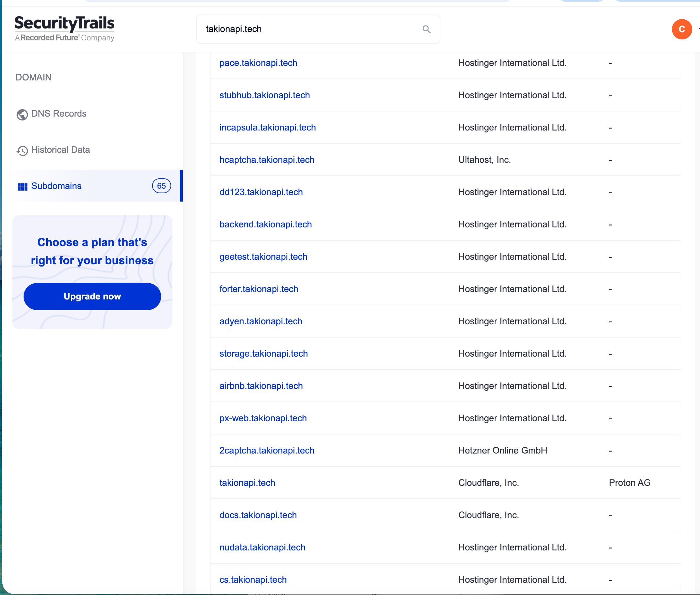
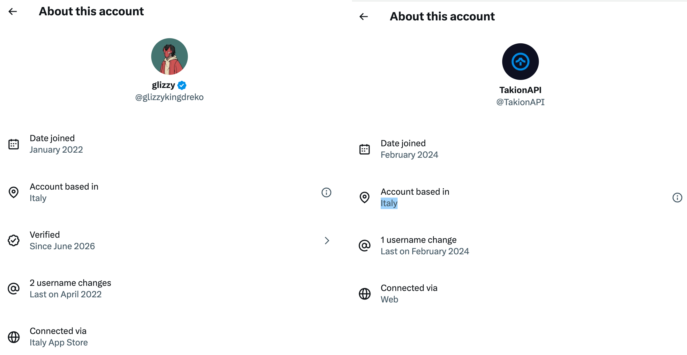
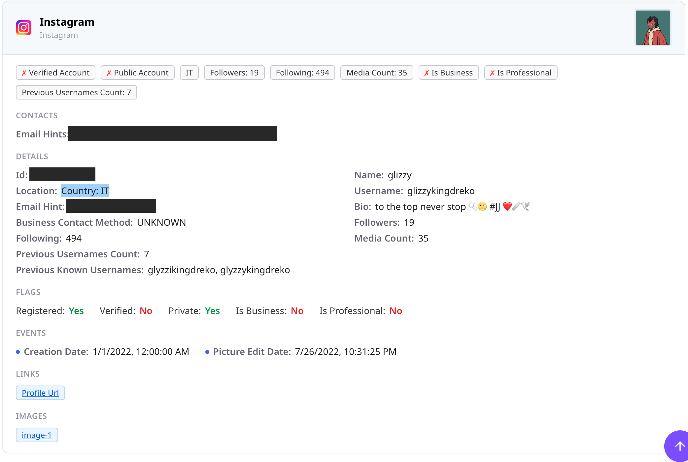
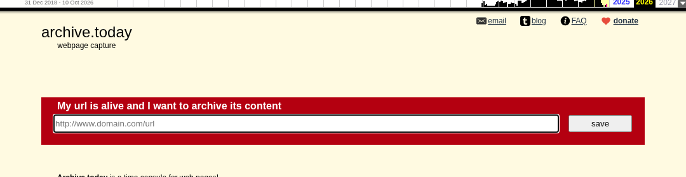
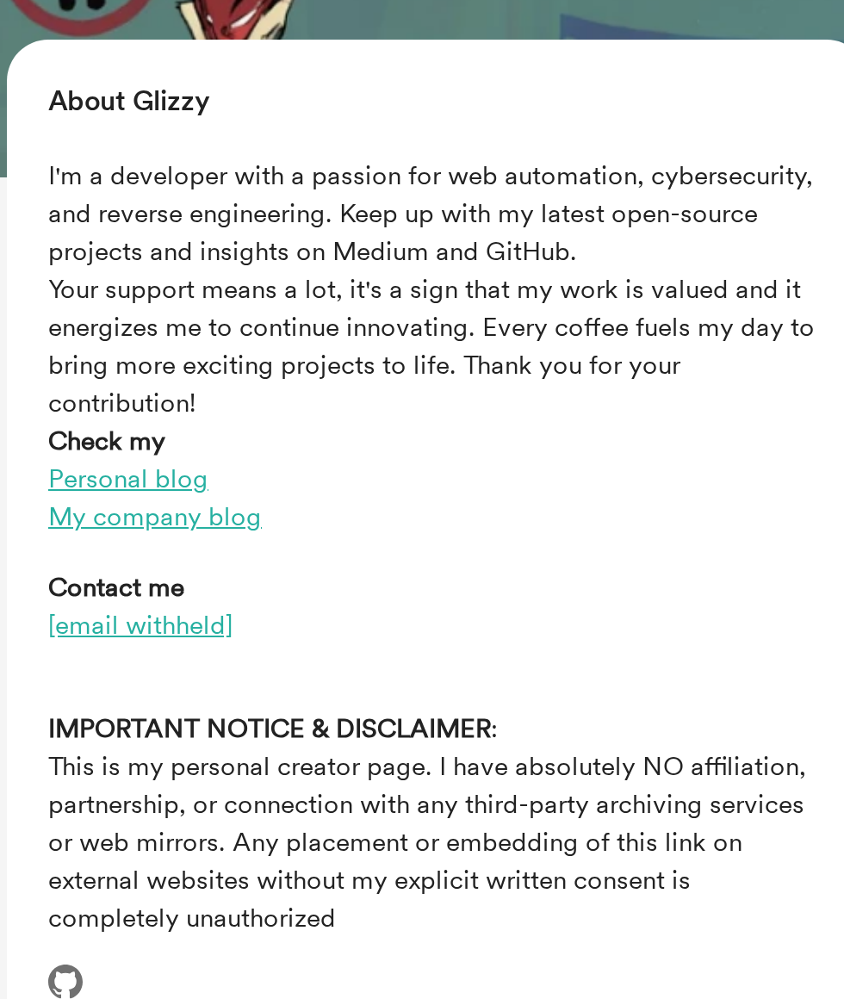
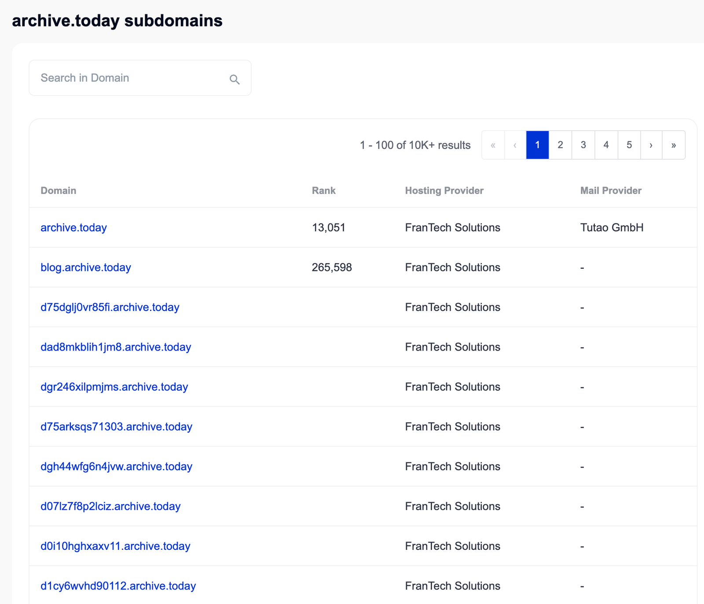
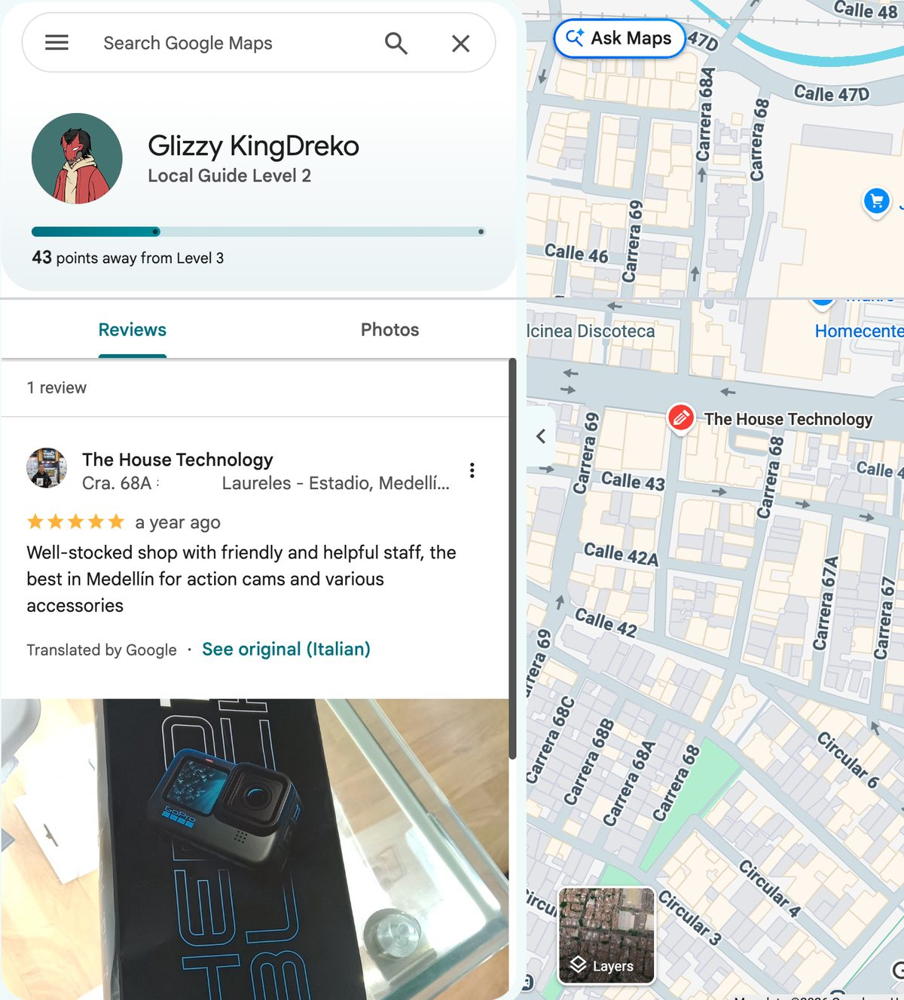
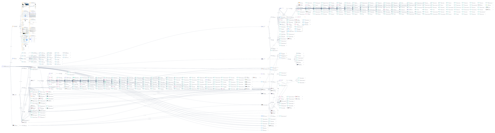

The finding: Archive.today, the anonymous web-archiving site the FBI is trying to unmask, pointed its “donate” button at the personal donation page of an Italian anti-bot developer known online as glizzy (@glizzykingdreko). That page links to his company, Takion API. Takion sells a service that defeats website bot checks. Archived copies of Archive.today’s homepage show the link from August 2025 through at least October 4, 2026. We assess it is likely that Takion’s owner has a working relationship with Archive.today’s donation setup. We do not find evidence that he runs Archive.today. In September 2026 he added a notice to his donation page denying any connection to “third-party archiving services or web mirrors.”
Key Findings
- Persona and company are one operation (high confidence). The glizzykingdreko donation page calls Takion’s blog “My company blog.” Takion’s website lists his GitHub projects as its own research.
- The handle sat in Archive.today’s donate link (high confidence). Wayback Machine copies of Archive.ph from August 1, 2025, to October 4, 2026, show the donate button pointing to buymeacoffee.com/glizzykingdreko. Other copies point to Archive.today’s own Liberapay page and to three other donation handles.
- Takion is tied to Archive.today’s donation money (likely). His supporter count rose from 14 to 177 while the link ran. We cannot see who paid or why.
- Takion powers Archive.today (unproven). Takion sells exactly the bot-check bypass a mass web archiver needs. We found no technical link between Takion and Archive.today’s servers.
- Takion is the commercial end of paywall-bypass infrastructure (low confidence). Takion markets scraping, not paywall bypass. This rests on the donation link alone.
- Locations. Italy: high confidence, from three platforms. Germany: low confidence, through a separate “kingdreko” identity tied in only by handle similarity. Medellín, Colombia: high confidence that the account reviewed a shop there, about a year ago.
What Takion API Sells
Takion API is an anti-bot bypass service. It is a paid tool that gets automated scrapers past the checks websites use to block bots (a bypass API). Its homepage says: “One POST returns fresh cookies, headers, and sensor tokens to scrape data through Cloudflare, DataDome, PerimeterX, Imperva, and more.” In plain terms, a customer sends one request and gets back the credentials a real browser would earn.
The site also says “We are the only team publishing antibot research in the open: DataDome solvers, Akamai sensor encryption, captcha deobfuscators.” Those projects sit on the glizzykingdreko GitHub account, which hosts 77 public repositories. Most of the top-starred ones are tools that break DataDome, Akamai, PerimeterX, and hCaptcha bot checks. His BrowJect library calls Takion “the best antibot bypass API provider”.

The subdomains tell the same story. SecurityTrails, a DNS history service, lists sixty-five of them. Many are named for the systems Takion defeats, including incapsula, hcaptcha, geetest, forter, px-web, nudata, and 2captcha. Others carry the names of target sites such as stubhub and airbnb. The main domain sits behind Cloudflare, with mail at Proton. The OctoProbe graph’s DNS records show the same Cloudflare name servers and Proton mail servers.
One Persona, Several Handles
The glizzy persona uses one name across platforms.
- X, @glizzykingdreko: joined January 2022, “Account based in Italy,” verified since June 2026, two username changes, connected through the Italy App Store.
- X, @TakionAPI: joined February 2024, “Account based in Italy.”
- Instagram, glizzykingdreko: country IT, created January 1, 2022, with earlier usernames glyzzikingdreko and glyzzykingdreko.
- GitHub, glizzykingdreko: created January 10, 2022. The bio is Latin: “Per aspera ad astra.”


The Donate Button
This is the central evidence. Archive.today’s homepage has a small “donate” link in its header. The Internet Archive’s Wayback Machine has saved the page many times, and each saved copy keeps the link’s target.
- Before August 2025: The link pointed to Archive.today’s own pages, buymeacoffee.com/archive.today (2023 to 2024) and liberapay.com/archiveis.
- May to July 2025: Monthly copies show two other donation handles, jotarokujo and philipdwyer.
- From August 1, 2025: Copies begin pointing to buymeacoffee.com/glizzykingdreko. Later hits include December 1, 2025, March 1, 2026, and October 4, 2026. One October 2025 copy shows a fourth handle, watersucks.
- Rotation: The target changes from day to day. A copy from October 3, 2026 shows Liberapay. The next day’s shows glizzykingdreko. In a sample of 91 copies from April 2025 to October 2026, 68 pointed to Liberapay and 20 to glizzykingdreko.

The glizzykingdreko donation page grew while the link ran. Saved copies show 14 supporters on August 4, 2025, 56 in December 2025, 126 in March 2026, 167 in July 2026, and 177 by mid-September 2026. The live page showed 181 on October 15, 2026. The page links to Takion’s blog as “My company blog.”
Then the page changed. A copy from September 10, 2026, has no disclaimer. A copy from September 14 has this one:
This is my personal creator page. I have absolutely NO affiliation, partnership, or connection with any third-party archiving services or web mirrors. Any placement or embedding of this link on external websites without my explicit written consent is completely unauthorized

Assessment. Two readings fit the record. In the first, Archive.today’s operator sent donations to a supplier or partner, and the disclaimer came after the link drew attention. In the second, Archive.today chose his page without his consent, as the disclaimer says. The second reading leaves gaps. The link ran for more than a year, and the page added supporters the whole time. It also sat next to other one-off handles, which looks like a deliberate list. We rate the working relationship likely, not confirmed. Only payment records would settle it.
The FBI Subpoena
The FBI is trying to learn who runs Archive.today. In fall 2025, it subpoenaed Tucows, the Canadian registrar of the site’s domain. The Verge reported: “The FBI is attempting to track down the identity of the owner of Archive.today and its numerous mirrors”. The subpoena demanded the “customer or subscriber name, address of service, and billing address”, The Verge said. It added that the order states the information “relates to a federal criminal investigation being conducted by the FBI”.
Ars Technica wrote that the FBI sought “subscriber information on [the] customer behind archive.today”. It also noted that “its registrant “Denis Petrov” may be an alias”. The German outlet heise online reported the subpoena on November 5, 2025. It cited a 2023 analysis finding that “Archive.today uses a botnet with changing IP addresses to circumvent anti-scraping measures”. heise added: “Whether the court order is genuine and how the operators of the site obtained it could not be verified so far.”
Archive.today’s own FAQ says: “It is privately funded; there are no complex finances behind it.”
How it bears on Takion. The subpoena seeks payment records, and donations are payment records. A donate link that routes money to an outside developer’s page is the kind of trail such a subpoena could follow. heise’s cited botnet claim describes the problem Takion sells a fix for: getting past anti-scraping walls at scale. That is a fit in motive and capability, not evidence of a contract. Nothing in the reporting names glizzy, Takion, or any Italian operator.
Where Archive.today Is Hosted
SecurityTrails, a domain-records service owned by Recorded Future, lists FranTech Solutions as the hosting provider for Archive.today and for every subdomain it shows, more than 10,000 in all. It lists Tutao GmbH, the German company behind the Tuta encrypted email service, as the mail provider.

Our own check on October 16, 2026, shows a more layered setup. Archive.today and Archive.ph point to two internet addresses, 104.36.80.106 and 104.36.80.107. The mirrors Archive.is, Archive.md, Archive.li, Archive.vn and Archive.fo use the same pair. The American Registry for Internet Numbers lists that address block under IncogNet LLC. IncogNet’s network number, or ASN (the ID a network uses to route traffic on the internet), is AS40663. Routing data from RIPE NCC, the European internet registry, shows FranTech’s network, AS53667, as one of IncogNet’s direct links to the wider internet. FranTech sells servers under the BuyVM brand. Archive.today’s mail still runs through Tuta.
FranTech has drawn scrutiny before. In 2019, TechRadar reported that research by the security firm Bromium found that “malicious threats were originating from web servers in Las Vegas, Nevada registered under the name PONYNET and hosted on BuyVM data centers.” PONYNET is the registered name of FranTech’s network. FranTech describes its own stance in BuyVM’s acceptable use policy: “Frantech is a strong believer and supporter of Freedom of Speech and has taken a strong, and in some cases very public, stance against censorship.”
How it bears on Takion. Hosting records do not show who runs a site. They do place Archive.today on infrastructure that SecurityTrails ties to FranTech, a provider that by its own account takes a hands-off stance on content. Nothing in the hosting records names glizzy or Takion.
The Medellín Google Maps Review
The OctoProbe graph links the persona’s email to a Google Maps contributor profile. The profile name is “Glizzy KingDreko.” It holds one public review, of an action-camera shop in Medellín, Colombia. Google dates it “a year ago” as of October 15, 2026, so roughly late 2025. Google says the review was written in Italian, and the shop replied in Spanish.

What it implies. The Italian-language review matches the Italy signals on X, Instagram, and the App Store. A camera-shop visit points to travel or a stay in Medellín around late 2025, during the donate-link period. It does not show where he lives now. Medellín is a common base for remote workers, and one review is one data point.
Italy and Germany
Italy (high confidence). Both X accounts say “based in Italy.” The personal X account connects through the Italy App Store. Instagram reports country IT. The Maps review is in Italian.
Germany (low confidence). The graph holds a second cluster under the shorter handle “kingdreko” and a related “d.italiano” handle. That cluster has German-domain email addresses (k***@gmx.de, d.i***@hotmail.de, d***@msn.de) and a username hit on the Eintracht Frankfurt fan-community site. Data records link those addresses to one real name, which we withhold. The link to glizzy is only an analyst’s seed (a starting identifier entered by hand), based on the shared “kingdreko” string. No record in the graph ties the two clusters together. The Germany thread is a lead, not a finding.
Identifier Graph

The graph has 480 nodes and 591 links across twenty-two expansion rounds. Most nodes are noise from common handles such as “glizzy” and “d.” The table below keeps the ones that carry weight.
| Identifier | Type | Source | Links to | Supports |
|---|---|---|---|---|
| g***@protonmail.com | Seed; OSINT modules | glizzykingdreko username, GitHub, Gravatar, Maps profile | Persona hub | |
| glizzykingdreko | Username | Seed; OSINT, Instagram | X, Instagram, GitHub, Medium, Buy Me a Coffee | One persona across platforms |
| takionapi.tech | Domain | Seed; DNS, WHOIS | Cloudflare name servers, Proton mail servers | Takion hosting; WHOIS private |
| takionapi (X, GitHub) | Username | Seed | TakionAPI X account | Company persona, Italy |
| Maps contributor 1057… | URL | OSINT (Google Maps) via the persona email | “Glizzy Kingdreko” name | Medellín review in Italian |
| webmaster@archive.ph | Seed (analyst-added) | Google account with an empty Maps profile | No link to the persona found | |
| k***@gmx.de, d.i***@gmx.net | Seed; data records | kingdreko and d.italiano usernames, one withheld name | Germany lead (low) | |
| community.eintracht.de profile | URL | OSINT via the d.italiano username | d.italiano | Germany lead (low) |
| buymeacoffee.com/glizzykingdreko | URL | OSINT; Wayback Machine | Archive.ph donate link; Takion blog | Donation link (likely relationship) |
Evidence on the Archive.today Link
Supports a relationship:
- Archive.today’s donate button pointed to the glizzykingdreko page in many saved copies over fourteen months.
- That page names Takion as the owner’s company.
- Supporters grew more than twelvefold while the link ran.
- Takion sells the bot-check bypass a mass archiver needs.
Cuts against it, or remains unproven:
- The owner denies any connection in writing.
- The donate link rotated among Liberapay and at least four handles, so glizzy was one recipient of several.
- We found no shared server, IP address, or DNS record between takionapi.tech and Archive.today.
- The webmaster@archive.ph Google account shows no tie to the persona.
- Takion’s homepage, docs, and blog index never mention paywalls or Archive.today.
- Press coverage of the subpoena names no suspect.
Method
- Sources: The investigation combined open-source collection with premium and proprietary data pulls across 30+ services. Cited public sources: Wayback Machine copies of Archive.ph and of the Buy Me a Coffee page, takionapi.tech, GitHub, The Verge, Ars Technica, heise online, Google Maps, and screenshots captured by OctoProbe. Emails, phone numbers, and account IDs are masked.
- Capture date: October 15, 2026.
Disclaimer
This is an analytic assessment of public information. Nobody named here has been charged with a crime in connection with Archive.today. “Likely” and “assessed” mark judgments, not established facts.